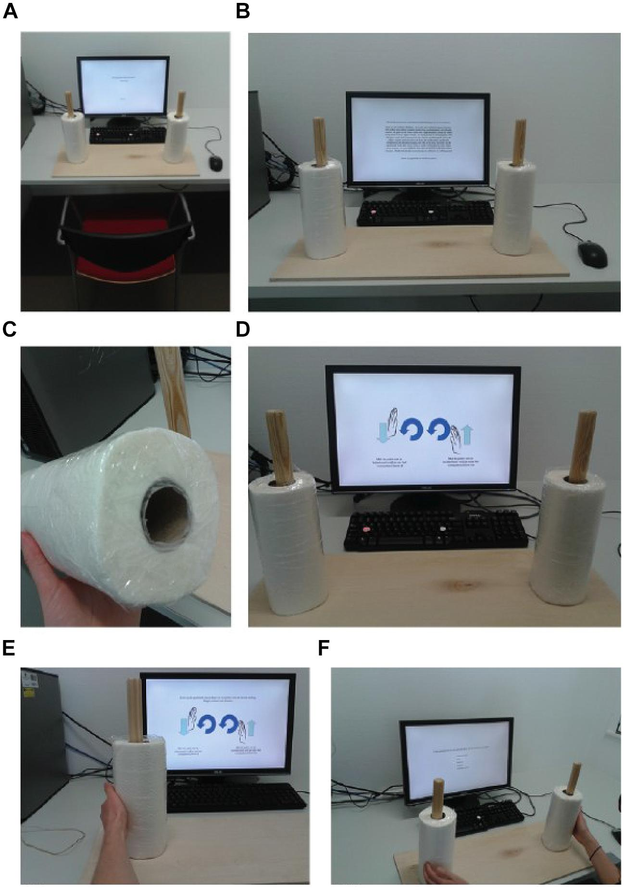

Tools for reproducible research
Why?
5 selfish reasons from F. Markowetz 1
… helps to avoid disaster
… makes it easier to write papers
… helps reviewers see it your way
… enables continuity of your work
… helps to build your reputation
1. Markowetz – Five selfish reasons to work reproducibly – 2015, Genome Biology
The tools: RMarkdown
Markdown
- Markdown is a simple formatting syntax for authoring HTML, PDF, and MS Word documents: http://rmarkdown.rstudio.com
Text formatting
*italic* or _italic_
**bold** __bold__Headings
# 1st Level Header
## 2nd Level HeaderLists
* Bulleted list item 1
* Item 2
1. Numbered list item 1
1. Item 2. The numbers are incremented automatically in the output.Links and images
<http://example.com>
[linked phrase](http://example.com)
Tables
First Header | Second Header
------------- | -------------
Content Cell | Content Cell
Content Cell | Content Cell
R Markdown
R Markdown is a mix of R code and markdown comments
In R Studio, R markdown can be run in a notebook mode or classic document mode
… better than simple text based “scripts”
Case study: Turning the wheels of time
Turning the wheels of time
Topolinski and Sparenberg : self–reported experiential openness is influenced by rotational movements
In 2015 Wagenmakers et. al.
could not confirm the results

The Wagenmakers et. al. data is available at https://osf.io/uszvx/, and as part of the JASP program with the name
Kitchen_Rolls.csv.The authors use the “Openness to Experience” subscale from the (NEO) inventory
They compare the mean response score between two groups with clockwise and counterclockwise turning of kitchen rolls
… hands on Rmarkdown …
Jupyter Notebooks
Jupyter Notebooks
formely known as IPython Notebooks
Composed of “cells” where you enter either markdown or Python code
Other languages are supported as well
… hands on in Jupyter …
Version control
Why version control?

from http://phdcomics.com/comics/archive_print.php?comicid=1531
Git and github
Git = the modern version control tool
Github = company hosting git repositories
Intro in the pdf in your materials or